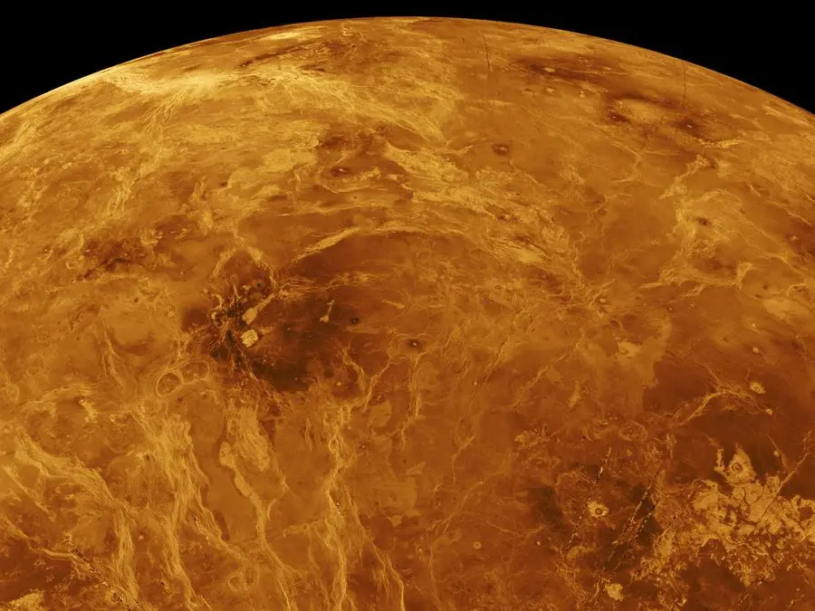
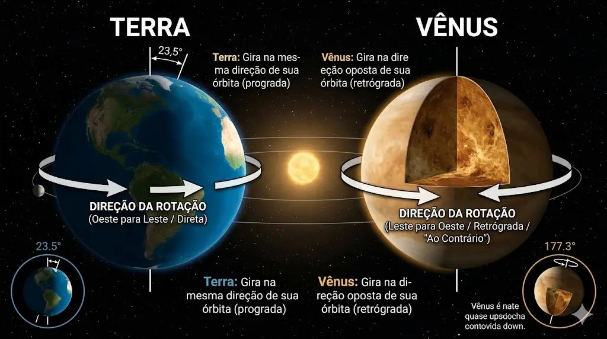

🌫️ Vênus: O Inferno Atmosférico
Vênus possui uma atmosfera extremamente densa, composta majoritariamente por dióxido de carbono, o que provoca um efeito estufa intenso e contínuo. Esse fenômeno transforma o planeta no mais quente do sistema solar.
As temperaturas na superfície ultrapassam 460°C, criando condições capazes de derreter metais. Além disso, a pressão atmosférica é esmagadora, equivalente a estar a grandes profundidades nos oceanos da Terra.
Um sistema fora de equilíbrio
A retenção constante de calor e a composição química da atmosfera criam um ambiente completamente instável e hostil.

🔥 Estrutura e Movimento
Apesar de ser semelhante em tamanho à Terra, Vênus apresenta diferenças profundas em sua dinâmica. Sua rotação é extremamente lenta e ocorre no sentido oposto ao da maioria dos planetas.
Esse movimento incomum faz com que um dia em Vênus seja mais longo do que seu próprio ano.
Um planeta que desafia padrões
Pequenas variações iniciais podem gerar resultados completamente distintos na evolução de um planeta.
